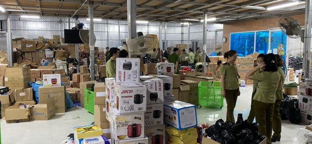

Dễ dàng mua hàng nhái, giả, lậu trên sàn thương mại điện tử
Thứ bảy, 12/08/2023, 21:20 (GMT+7)
Tọa đàm diễn ra trong khuôn khổ Triển lãm thương mại điện tử xuyên biên giới được tổ chức tại TP.HCM từ ngày 10 - 12.8. Thông tin tại tọa đàm, bà Lê Thị Hà - Trưởng phòng Chính sách, Cục Thương mại điện tử và Kỹ thuật số (Bộ Công thương) - cho hay, theo điều tra, khảo sát của Bộ Công thương, doanh thu thương mại điện tử bán lẻ tại Việt Nam năm 2022 ước tính tăng trưởng 20% so với năm 2021, đạt 16,4 tỉ USD, chiếm 7,5% doanh thu bán lẻ hàng hóa, dịch vụ tiêu dùng cả nước. Số lượng người tiêu dùng tham gia mua sắm trực tuyến trên 54,6 triệu người, giá trị mua sắm trực tuyến của một người đạt gần 270 USD/năm. 6 tháng đầu năm 2023, doanh số thương mại điện tử bán lẻ Việt Nam ước đạt ước đạt 10,3 tỉ USD, tăng khoảng 25% so với cùng kỳ, chiếm 7,7% doanh thu hàng hóa và dịch vụ tiêu dùng cả nước.
Tăng trưởng nhanh, mạnh và mang lại nhiều lợi thế cho người tiêu dùng lẫn doanh nghiệp, tuy vậy, theo ông Đỗ Hồng Trung, Văn phòng Thường trực Ban chỉ đạo 389 Quốc gia, thương mại điện tử có mặt trái của nó. Đó là tình trạng hàng giả, hàng kém chất lượng, hàng nhập lậu, hàng không rõ nguồn gốc xuất xứ được rao bán tràn lan trên các sàn, các trang mạng xã hội ngày càng nhiều. "Đây là vấn đề nhức nhối của xã hội, ảnh hưởng đến quyền lợi của người tiêu dùng, môi trường đầu tư kinh doanh, gây thất thu ngân sách.Rất đơn giản khi tìm mua những mặt hàng này trên các sàn thương mại điện tử", ông Đỗ Hồng Trung nhấn mạnh. Báo cáo của Ban Chỉ đạo 389 cho biết, năm 2022, lực lượng chức năng đã phát hiện, bắt giữ, xử lý 139.758 vụ việc vi phạm (tăng 1,17% so với cùng kỳ năm 2021). Trong đó, các đơn vị và địa phương phát hiện, bắt giữ 3.692 vụ sản xuất, mua bán, vận chuyển hàng giả, hàng kém chất lượng, hàng vi phạm quyền sở hữu trí tuệ (tăng 56,51% so với cùng kỳ năm 2021). Trong 6 tháng đầu năm 2023, có 66.049 vụ việc vi phạm (tăng 22,1% so với cùng kỳ năm 2022). Trong đó, có 2.219 vụ mua bán, vận chuyển hàng cấm, hàng lậu (giảm 9,72% so với cùng kỳ); 61.057 vụ gian lận thương mại, gian lận về thuế (tăng 20,55% so với cùng kỳ); 2.773 vụ hàng giả, vi phạm sở hữu trí tuệ (tăng 174,01% so với cùng kỳ); thu nộp ngân sách nhà nước hơn 6.560,609 tỉ đồng (tăng 76,23% so với cùng kỳ); khởi tố hình sự 1.166 vụ/1.610 đối tượng. Tuy vậy, kết quả trên chưa phản ánh hết được tình hình thực tế. Ban chỉ đạo 389 Quốc gia nhấn mạnh: Tình trạng kinh doanh hàng giả, hàng nhái, xâm phạm sở hữu trí tuệ… trên nền tảng thương mại điện tử còn tiềm ẩn phức tạp.
Giới thiệu
Tell Ur Mom II - Winno ft. Heily「Cukak Remix」/ Audio Lyrics Video
Follow Me

Liên hệ
Điện thoại: 0987654321
Email: web1013@dinhnt.com